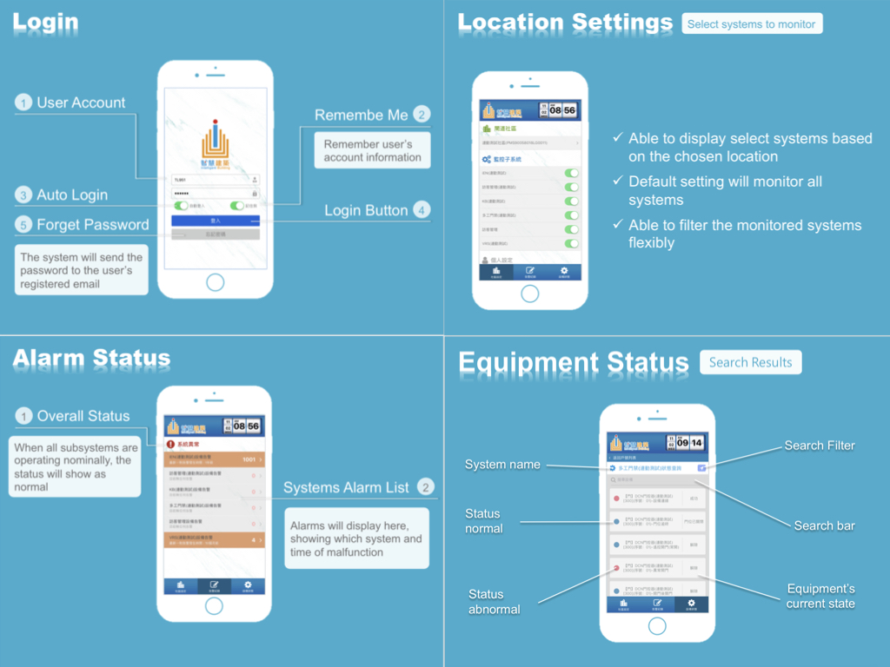

About Me
Mission-driven front-end developer with a passion for thoughtful UI design, collaboration, and new technologiesI am MingYi Lin, a graduate student at University of Southern California. I expect to graduate in May 2020. I have proficient work experience in developing single-page web applications. I’ve always sought out opportunities and challenges that are meaningful to me and eager to learn new technologies.
Education-
Aug 2018 - PresentM.S. in Computer Science (Data Informatics) GPA : 4.0 / 4.0 University of Southern California, Los Angeles, California
-
Sep 2012 - July 2014M.B.A. in Information Management GPA : 4.0 / 4.0 National Central University, Taoyuan City, Taiwan
-
Sep 2008 - July 2012B.B.A. in Information Management GPA : 3.7 / 4.0 Tatung University, Taipei City, Taiwan
Experience
-
May 2019 - PresentDeployed an open-source, web-based viewer for high-resolution zoomable microscopic images.Front-end Developer (Student Worker) Information Sciences Institute, Los Angeles, California
-
Jan 2019 - May 2019Helped the professor with students evaluation and assignments, and provided assistance for students with their questions, exams and web projects.Teaching Assistant (Foundations of Data Management) USC Viterbi School of Engineering, Los Angeles, California
-
Oct 2014 - July 2018Built and maintained single-page applications that allow users to efficiently manage up to 50,000 IoT equipment or perform visualization tasks. Develop ProductFront-end Engineer Chunghwa Telecom Laboratories, Taiwan
- GIS dashboard system for integrating, analyzing, and visualizing open data into interactable, customizable widgets for end-users
- Automated graphical system to automate building equipment. To date, has saved 15% energy consumption since 2016. This project has been applying to more than 5 sites in Taiwan
- MQTT message-checking application which applies subscribe/publish message protocol to greatly reduce the loading between server-side and client-side
Portfolio
-
May 2019 - PresentChaise Viewer Application Information Sciences Institute, Los Angeles, California
- Developed a web application that helps biological students to learn anatomy using high-resolution zoomable images
- Developed from scratch a feature that precisely overlays annotations (SVG files) over an image
- Developed highlighting, locating and drawing features for users to annotate the microscopic images
- Created documentation on its URL parameters, input examples and their usage
TechnologiesJavaScript AngularJS D3 Openseadragon Protractor Tiff Images -
Aug 2018 - Dec 2018Oriole - Pitch Detector University of Southern California, Los Angeles, California
- Developed a web application that help users find songs to sing based on their vocal range
- Developed a pitch detecting feature to let users find their vocal range
- Developed facet/keyword/index search features, matching songs based on user’s vocal range, year, genre or any keyword
- Developed a music player feature to let user listen to selected songs
TechnologiesPython JavaScript React Firebase -
Apr 2017 - Jul 2018GIS - Dashboard System Chunghwa Telecom Laboratories, Taiwan
- Integrated the open data for end-users to perform charts visualization
- Implemented customizable widgets for users to interact between data and geomap
- Collaborated with back-end team to fetch real-time unresolved cases/open data from different government departments
- Reduced the loading greatly between the application and the server using publish/subscribe message-oriented architecture
- Collaborated with team members to host training sessions; created content, instructions, common FAQ for clients
TechnologiesC# JavaScript jQuery -
Apr 2016 - Aug 2017Automated Graphical Web System Chunghwa Telecom Laboratories, Taiwan
- Graphical system for monitoring/controlling building-wide equipment
- Refactored the existing Silverlight application into using purely JavaScript
- Built a design interface to edit how to present IoT equipment through flexible layout
- Built a deployment interface to automatically monitor/control IoT equipment and it has saved 15% energy consumption of a client’s premises since 2016
- Implemented customizable widgets for different types of IoT equipment and able to set different rules to automatically change/control equipment’s status based on different scenario
- Developed a MQTT server to subscribe/publish equipment status to broker and applications
TechnologiesC# JavaScript jQuery Node.js MQTT -
Jul 2016 - Nov 2016iOS application for monitoring IoT equipment Chunghwa Telecom Laboratories, Taiwan
- Built cross-system mobile app for monitoring up to 50,000 pieces of IoT equipment, ensured smooth in switching interface to interface
- Developed au user authorization feature to log in to the application by using OAuth2
- Developed a fetching feature to connect to MQTT Broker and fetch IoT equipment status based on user’s authorization
- Created an alert feature to automatically notify users of malfunctioning equipment
TechnologiesReactNative Node.js MQTT OAuth2